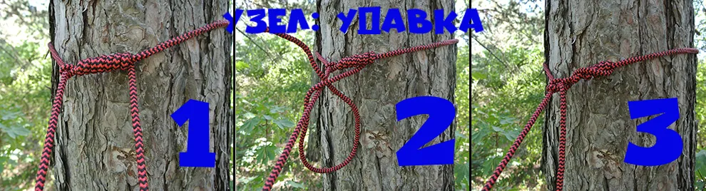

Noose hitch
A simple wrap-around hitch for tying a rope directly to a tree trunk or thick branch without a carabiner — a common way to rig a hammock or tarp ridgeline. The rope loops around the trunk, then the working end winds around the standing part a few times before being cinched tight. It grips well under load but is still easy to release afterward.
- Pass the rope around the trunk or branch.
- Cross the working end over the standing part.
- Wind the working end around the standing part two or three times.
- Pull the wraps snug against the trunk.
Step-by-step photo
